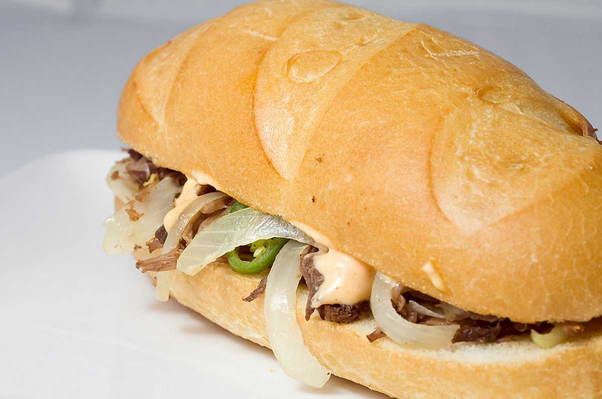
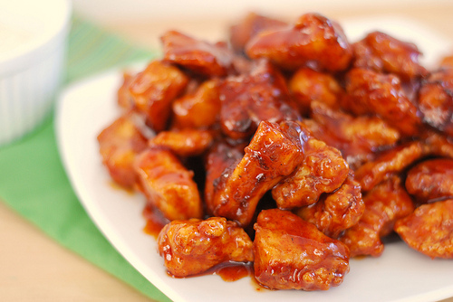
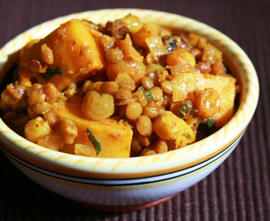
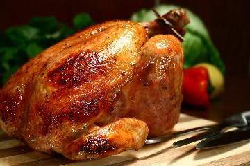
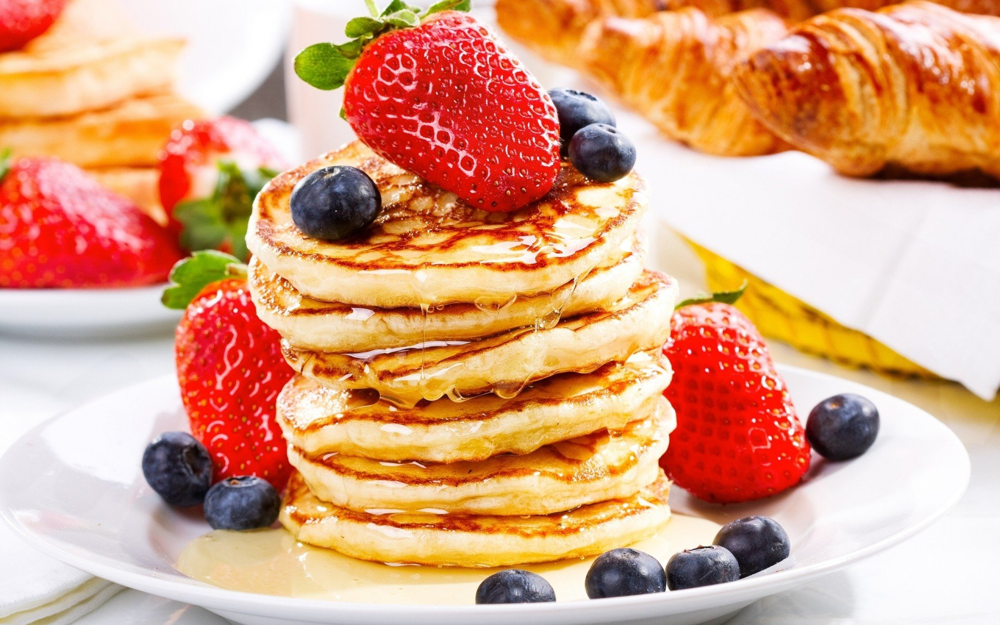
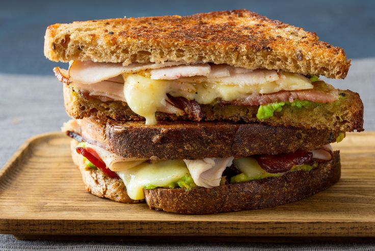
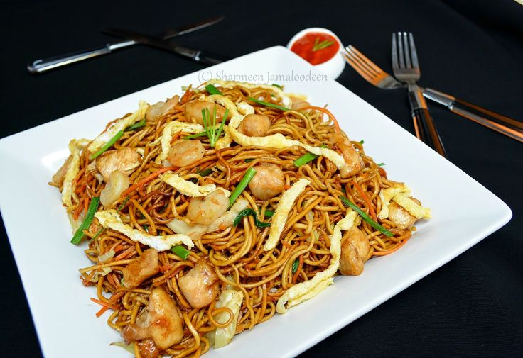
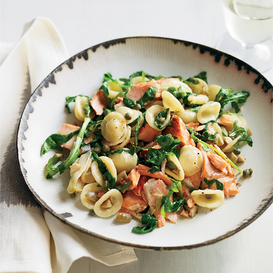
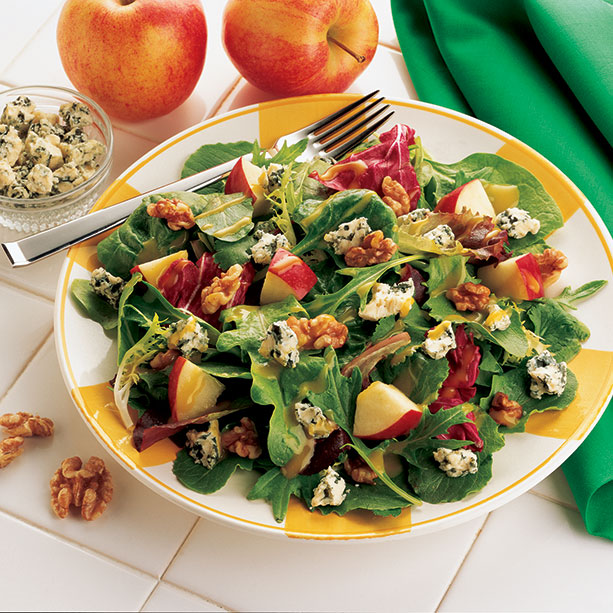
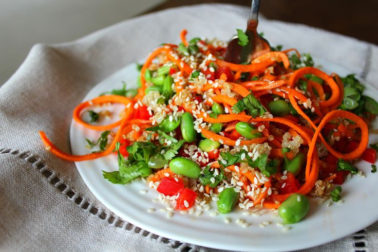

About
The Purveyors Kitchen legacy began in 1981 as daniel oselu and son's Co., Inc.
Founded by Daniel Oselu and Francis Oselu, the company prospered along
the east of Poland, and internationally throughout the 1980s and
1990s and became the dominant operator within the bakery-cafe category.
Menu
- 
-
Sriracha Pulled chicken:
pulled beef,srirancha mayonnaise-style sauce,
caramelized onions,coleslaw and pickles all in
a potato scallion bun.
- 
-
Chipole Chicken:
Roasted chicken breast,chipotle mayonnaise-style
sauce,tomatoes,monterey Jack cheese and spinach
on a multigrain ciabatta bun.
- 
-
Lentil and sweet potatoes:
Made with lentil and sweet potatoes hummus,caramelised
onions,kale,corn and black bean blend and lentils.
All in whole wheat tortilla
- 
-
Sunday Style Roast chicken:
Roasted chicken breast,cranberry mayonnaise style
sauce and turkey dressing all wrapped in a flatbread.
Sunda-style dinner to go!
- 
-
Apple, Brie and Honey croisent:
This delightfull sandwich is made with our authentic
French croissant and includes brie,sliced apples,
lettuce,and a dizzle of honey.
- 
-
Classic Grilled Cheese on Multigram Bread:
This classic sandwich is made with stone baked
multigrain bread and melted processed cheddar
cheese.Make it your way by adding bacon or tomato.
- 
-
Savoury Chicken Noodle with Herbs:
A great way to warm up your day.Our savoury soup
is made with no artificial colours or flavours.
- 
-
Tuscan Vegetable wih Shaved Parmeson:
This great tasting soup has one full serving of
vegetables .It's a great addition to any meal.
- 
-
Apple Walnut Salad:
Vibrant,simple and delicious.Crispy apples and
crunchy walnuts come together to make this salad both
refreshing and satisfying.It's the perfect addition to
your lunch.170 calories.
- 
-
Quinoo Edomame Mandarin Salad:
A refreshing salad to suit everyone's taste buds.
Edamame beans,mandarin orange wedges and
toased pumpkin seeds on a bed of marinated
quinoa salad.270 calories.